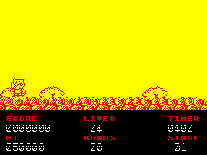

The Great Giana Sisters Remake

| Created by: | Pete Naylor |
| Price: | Free |
| Year: | 2026 |
| Source: | itch.io |
Although The Great Giana Sisters was completed for the ZX Spectrum and reviewed by the press, legal action prevented its commercial release and it remained one of the platform's great lost games.


In November 2026, Pete Naylor released an AI-assisted recreation of the unreleased ZX Spectrum conversion, painstakingly rebuilding the entire game from a variety of historical sources. Magazine screenshots, contemporary reviews, audio from other 8-bit versions, and reference material from existing releases were used to recreate levels, graphics, music, and gameplay as faithfully as possible.
The project goes beyond simply recreating a lost game. Included are several versions ranging from a hypothetical 48K commercial release through to enhanced 128K and +3 editions featuring AY music, sound effects, improved scrolling, additional animation, and other refinements. The result is both a reconstruction of a fascinating 'what if?' from Spectrum history and a polished modern release that finally allows players to experience the complete adventure on Sinclair's iconic machine.
If you enjoy playing this game, I would encourage you to support the developer and purchase it using the itch.io link above.